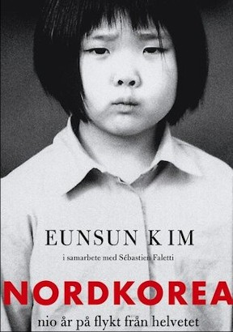

Nordkorea : nio år på flykt från helvetet
Nordkorea: nio år på flykt från helvetet är en verklighetsbaserad
berättelse av Eunsun Kim, där hon beskriver sin flykt från
Nordkorea och kampen för ett bättre liv.
Boken ger en inblick i de svåra förhållanden som hon
och hennes familj tvingades uthärda innan de slutligen nådde
frihet i Sydkorea.
Boken publicerades först på koreanska 2012 och har
därefter översatts till flera språk, inklusive svenska. Den svenska
utgåvan släpptes 2016 av Norstedts förlag. I den här gripande
berättelsen skildrar författaren sin nio år långa flykt från
Nordkorea och de många
utmaningar som hon och hennes familj mötte på vägen till frihet.